Projeto da Federação Japonesa de Futebol
BLUE LOCK
Crie o atacante mais egoísta do mundo.
- 300 atacantes
- 1 sobrevivente
- 5 clubes europeus
Mangá de Muneyuki Kaneshiro (roteiro) e Yusuke Nomura (arte), publicado na Weekly Shōnen Magazine desde 2018, com anime do estúdio 8bit (2022). Após a eliminação do Japão na Copa de 2018, a Federação Japonesa reúne 300 atacantes jovens numa instalação isolada para criar o atacante mais egoísta do mundo.
Personagens
Jogadores do Blue Lock
Ranking final #1 Ranking final #5 Ranking final #6 Ranking final #8 Ranking final #24 Ranking final #7 Ranking final #4 Ranking final #1 Ranking final #12 Ranking final #3 Ranking final #11 Ranking final #16
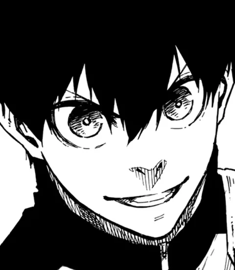
Yoichi Isagi
Atacante
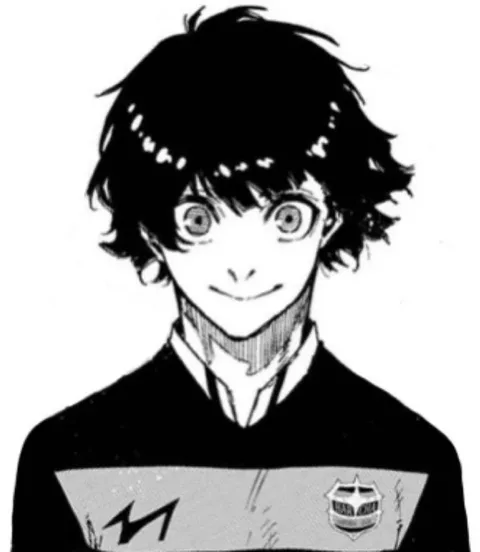
Meguru Bachira
Atacante
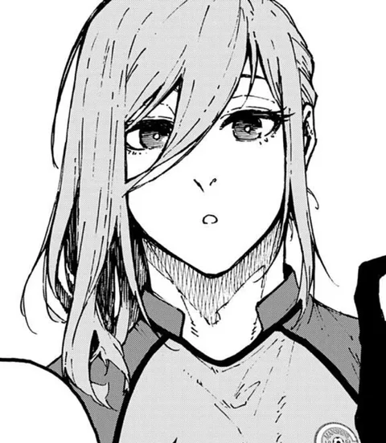
Hyoma Chigiri
Ponta esquerda
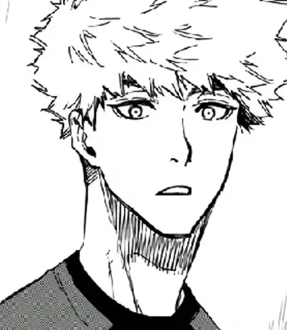
Rensuke Kunigami
Atacante
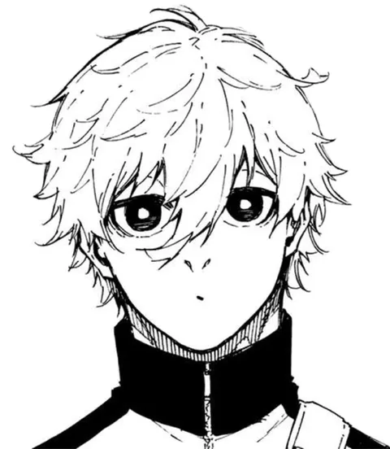
Seishiro Nagi
Atacante
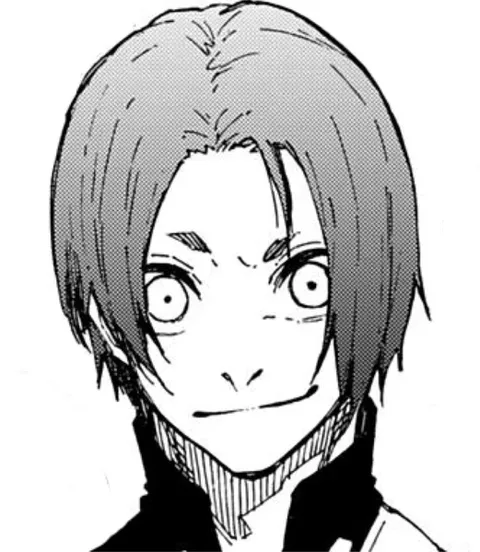
Reo Mikage
Versátil (todas as linhas)
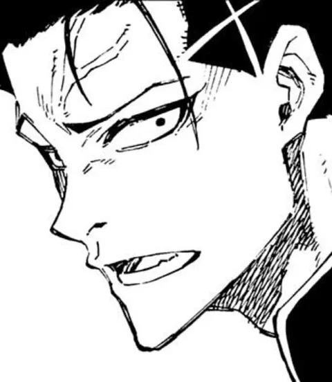
Shoei Barou
Atacante
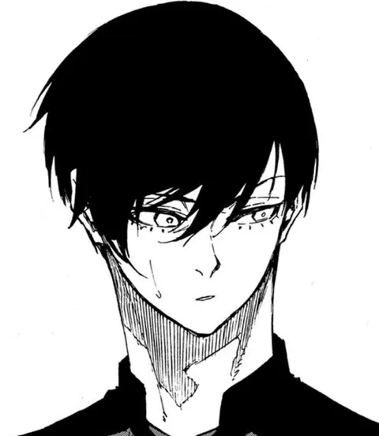
Rin Itoshi
Atacante
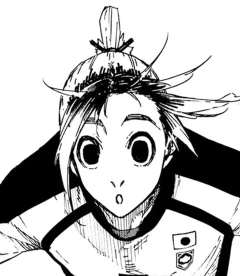
Gin Gagamaru
Goleiro
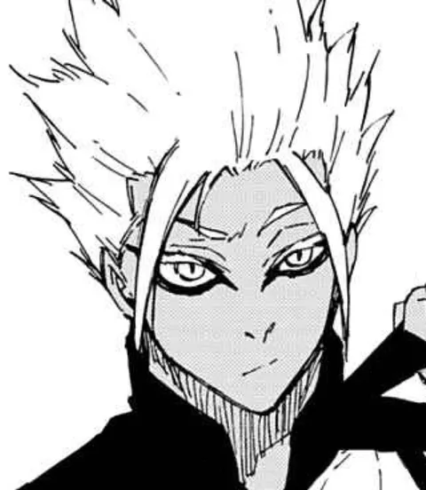
Ryusei Shidou
Atacante
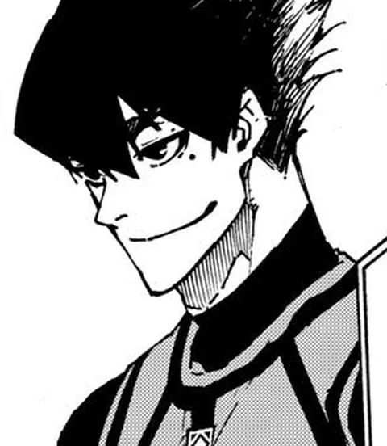
Tabito Karasu
Volante
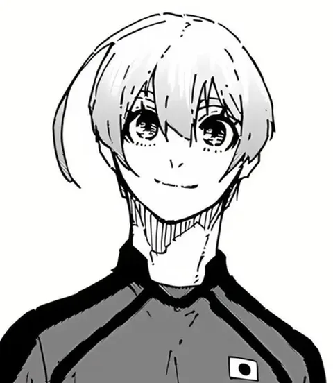
Yo Hiori
Lateral